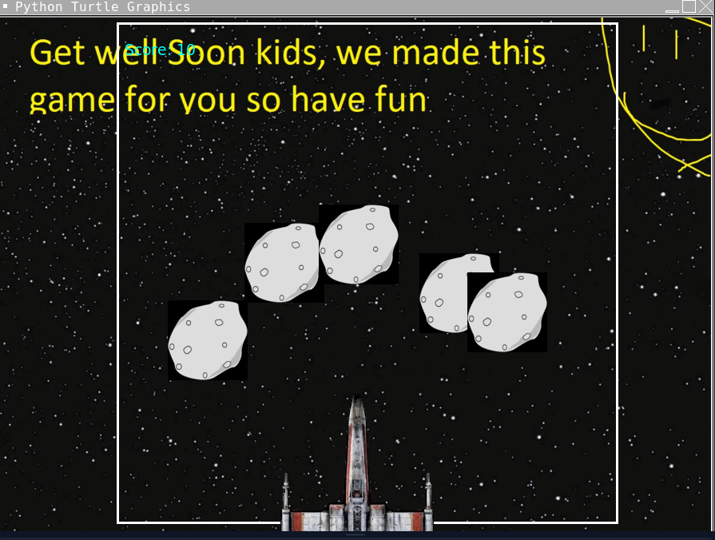

Home
Portfolio
About Me
This is my Portfolio Page!
First Project-Safari Park with Michael!


These are the images from the game I created with Michael. If you chose the left path, the console would direct you to elephant and if you chose the right path, you would be directed towards the lion. The starting image starting the game to choose your path is image with the truck.
Second project-Snake Game with Mikayla!

This is an image of the second project I have created with my partner, Mikayla. In this project we used different functions we've learned in this unit such as the random function to switch different foods the snake can eat. We also added a scoreboard which keeps a high score someone gets in which they are later on able to beat. In the end this is what we got for our results.
Third project- Ecard creation with Jacob!

This is the third project that I created with my partner, Jacob. In this project we created an Ecard directed towards a children's hospital which provided them with an arcade game for them to play at their time at the children's hospital. We put a little message at the top of the game encouraging them to stay strong and get well soon. This is our result after spending a lot of time and the game was successfully developed.
Modified bits in pictures.
Use data files to create graphs.
Using netlogo do remix of illusions.
Interactive Fiction Rags to Riches.